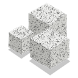

Escolha uma nota no explorador ou crie uma com Ctrl N.
Arraste para girar · roda do mouse para zoom · botão direito para mover · clique para abrir · F: só o grafo

Um cofre é uma pasta comum com notas em Markdown.
Escolha uma nota no explorador ou crie uma com Ctrl N.
Arraste para girar · roda do mouse para zoom · botão direito para mover · clique para abrir · F: só o grafo